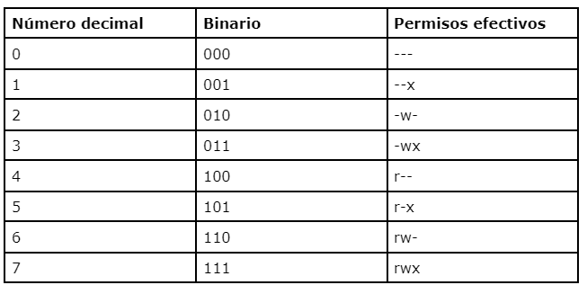

3. Autenticación, control de acceso y cuotas.
Usuarios y niveles de acceso al servicio ftp
A continuación veremos los diferentes tipos de usuarios y sus niveles de acceso en el servidor FTP.
Acceso anónimo (anonymous)
Los servidores pueden ofrecer servicio libremente a todos los usuarios, acceder sin tener un identificador de usuario, leer y navegar por el contenido de los directorios libremente, indiferentemente de quienes acceden y del lugar donde lo hace.
El acceso anónimo es una forma cómoda de permitir que todos los clientes tengan acceso a cierta información sin que el administrador del servicio tenga que controlar las cuentas de usuarios.
La información que se usa en el acceso anónimo es de carácter público y se pueden leer los contenidos de los directorios pero no eliminarlos ni modificarlos. Normalmente, el contenido suele ser software de dominio público o de libre distribución, imágenes, sonido, videos, etc.
Ejemplos de servidores públicos con acceso anónimo: ftp://ftp.rediris.es y ftp://cdimage.ubuntu.com.
El requisito para acceder por acceso anónimo es mediante un nombre predefinido que existe en el servicio FTP y que tiene que estar configurado previamente.
Este usuario que permite el acceso anónimo se llama anonymous. Cuando se valida la conexión, el nombre del usuario que ponemos es anonymous, y sin contraseña (aunque pida una contraseña, no es necesario escribir nada o, si lo pide obligatoriamente, se puede poner cualquier correo electrónico como contraseña válida).
Warning
El acceso anónimo es un tipo de acceso que es inviable en el caso del despliegue web, donde el control de acceso de los usuarios es importante, puesto que es de carácter privado, confidencial y depende también nuestra aplicación web. Permitir un acceso al directorio raíz de la aplicación web con un acceso anónimo mediante FTP es una falta grave de seguridad y puede tener consecuencias desastrosas.
Acceso por usuario identificado (cuentas)
Se da cuando la necesidad de privilegios y la información con la cual se trabaja es de índole privada. Se tiene que acceder al servicio mediante usuarios identificados dentro del servidor FTP, llamadas cuentas.
Las cuentas de usuario pueden ser:
- Usuario de sistema o autenticado (Local): será un usuario definido dentro del sistema operativo donde se ofrece el servicio.
- Usuario virtual: no tiene una relación directa con el sistema operativo. Utilizar este tipo de usuarios es útil en entornos donde la seguridad y el control de acceso son una preocupación, o cuando se necesita una gestión más eficiente de múltiples cuentas de usuario FTP, ya que este tipo de usuarios proporcionan un nivel adicional de control y seguridad en el acceso al sistema.
Todos estos usuarios tendrán configurado una serie de permisos dependiendo de la implicación que tengan los usuarios, por ejemplo dentro del proyecto web. Os pueden interesar usuarios que solo puedan leer la información del proyecto y otros que puedan actualizar los ficheros, todo esto gestionando la jerarquía del equipo del proyecto que está haciendo la aplicación web.
De manera resumida podemos ver los usuarios y sus accesos
| Usuario | Anónimo | Autenticado (Local) | Virtual |
|---|---|---|---|
| Acceso | Este tipo de usuario no requiere autenticación; cualquiera puede acceder de forma anónima. | Estos usuarios deben autenticarse con un nombre de usuario y contraseña válidos en el servidor FTP. | Los usuarios virtuales se autentican en el servidor FTP, pero no corresponden a cuentas de usuario reales en el sistema operativo del servidor. |
| Nivel de Acceso | Los usuarios anónimos suelen tener acceso limitado y solo pueden ver y descargar archivos públicos en un directorio específico. No pueden cargar ni modificar archivos en el servidor. | Los usuarios autenticados pueden tener diferentes niveles de acceso según la configuración del servidor. Pueden cargar, descargar y administrar archivos en el servidor, y su acceso se basa en las políticas de seguridad y permisos configurados por el administrador. | Los usuarios virtuales tienen un acceso limitado y controlado por el administrador del servidor. Pueden tener acceso a directorios específicos, y sus permisos se gestionan de manera independiente de las cuentas de usuario del sistema. |
Permisos
Dentro de un servicio FTP, uno de los pasos importantes es el de conceder permisos determinados para controlar el acceso al servidor o a los diferentes directorios. El protocolo FTP sigue los permisos establecidos en entornos de tipo UNIX y sus similares GNU/Linux.
Por otro lado, los permisos también son una parte importante de la configuración del servicio FTP para poder restringir la lectura y escritura a usuarios que entran al sistema desde el exterior, dando siempre los mínimos permisos a los usuarios y siempre a carpeta concretas para que no puedan acceder a información a la que no están autorizados.
La configuración de niveles de acceso y tipos de permisos en un servidor FTP es igual que en un sistema operativo unix/linux.
Nivel de acceso
En Linux existen tres niveles de acceso a ficheros y carpetas:
- Propietario(user=u): permisos asignados al propietario del archivo o directorio.
- Grupo(group=g): permisos asignados a los grupos de usuarios.
- Otros(others=o): permisos asignados a otros usuarios existentes en el sistema operativo que no son ni propietarios ni pertenecen a un grupo.
Tipos de permisos
Cada fichero a su vez puede tener tres permisos:
- Lectura (r): se puede ver el contenido, visualizar un fichero o un directorio.
- Escritura (w): se puede modificar el contenido del archivo o directorio.
- Ejecución (x): se puede ejecutar el archivo.
- La ausencia de permiso es identificada con el carácter '-'.
Cada permiso tiene un equivalente numérico en el sistema octal, así por ejemplo: r=4, w=2, x=1 y -=0. Por ejemplo: rw- identifica permiso de lectura y escritura o lo que es lo mismo 4+2+0=6
En un sistema operativo tipo GNU/Linux mediante el comando ls -l puedes ver los permisos asignados a ficheros y directorios.
El modo octal relacionado con los permisos es el siguiente:

Veamos un ejemplo:
Estos tres permisos se pueden aplicar a los tres niveles anteriores, en la siguiente pantalla se puede ver un ejemplo.
El primer carácter indica el tipo de archivo de la siguiente manera:
- d: directorio.
- guión (-): fichero.
- l: enlace (link).
- b: archivo binario.
- p: archivo especial de tubería (pipe).
- c: archivo de caracteres especiales (por ejemplo una impresora).
El resto son 9 caracteres, indican los permisos en cada uno de los grupos, por ejemplo: rwxr-xr-x en tres grupos.
- Primer grupo son los permisos del Propietario (user) del directorio o archivo.
- Segundo grupo son los permisos del Grupo (group).
- Tercer grupo son los permisos del resto u Otros (others) usuarios del sistema operativo.
- Después aparece un número que indica el número de enlaces al archivo.
- La siguiente columna es el nombre de usuario propietario del archivo o directorio.
- La siguiente es el nombre del grupo al que pertenece el archivo.
- Las siguientes columnas son el tamaño y la fecha y hora de la última modificación del archivo o directorio.
- La última columna es el nombre del directorio o archivo.
Comando chmod
Para asignar permisos en Linux se usa el comando chmod que puede modificar los permisos siguientes:
- Propietario (u)
- Grupos (g)
- Otros (o)
La sintaxis general es:
chmod [opciones] modo-octal fichero
Por ejemplo, si se quiere asignar permisos de lectura (r) y escritura (w) al fichero prueba1.txt solamente al usuario propietario podemos utilizar cualquiera de los dos comandos siguientes:
chmod 600 prueba1.txtchmod u+rw prueba1.txt
Comando chown
Este comando se utiliza para cambiar el propietario del archivo o directorio se usa el comando chown. La sintaxis general es:
chown [opciones] [usuario] [:grupo] ficheros
Por ejemplo, si se quiere hacer propietario a usuario1 del fichero prueba.txt el comando a utilizar sería:
chown usuario1 prueba.txt
Warning
Por otro lado en un sistema GNU/Linux, en principio, no todos los usuarios del sistema tienen acceso por ftp, así existe un fichero /etc/ftpusers que contiene una lista de usuarios que no tienen permiso de acceso por FTP. Por razones de seguridad al menos los siguientes usuarios deberían estar listados en este fichero: root, bin, uucp, news. Ten en cuenta que las líneas en blanco y las líneas que comiencen por el carácter '#' serán ignoradas.
Cuotas
Las cuotas de FTP se refieren a la limitación de espacio en disco que se impone a los usuarios en un servidor FTP.
El establecer cuotas FTP permite realizar un control del recurso y gestionar el uso del espacio en disco y priorizar los recursos a los usuarios, entre otras razones, especialmente en entornos compartidos o en servidores FTP públicos.
Las cuotas de FTP permiten a los administradores de servidores FTP asignar un límite de espacio en disco a cada usuario o grupo de usuarios. Esto puede ser beneficioso por varias razones:
- Control de Recursos: Las cuotas evitan que un usuario o grupo utilice todo el espacio en disco disponible, lo que garantiza que haya recursos disponibles para otros usuarios.
- Gestión de Espacio: Ayudan a mantener organizado y gestionado el espacio en disco del servidor, evitando que se sature y se vuelva inmanejable.
- Prioridad de Recursos: Las cuotas pueden usarse para dar prioridad a ciertos usuarios o grupos, permitiéndoles disponer de más espacio que otros.
- Seguridad: Limitan el daño potencial que un usuario malicioso podría causar si tuviera acceso ilimitado al espacio en disco del servidor.
- Evitar el Abuso: Evitan el abuso del servidor FTP, como la carga excesiva de archivos o la acumulación de datos innecesarios.
La forma en que se implementan las cuotas de FTP puede variar según el servidor FTP que se utilice. En algunos servidores, las cuotas se configuran en el nivel de usuario, lo que permite asignar un límite de espacio en disco individualmente a cada usuario. En otros servidores, las cuotas pueden configurarse en el nivel de grupo, lo que permite definir límites de espacio para grupos de usuarios.
Las cuotas generales del servidor permiten configurar:
- Restringir la velocidad de subida y de descarga dentro del servidor FTP.
- Restringir el máximo de espacio de almacenamiento de un fichero al servidor FTP.
- Restringir el máximo de la medida del fichero que podemos descargar del servidor.
Las cuotas de usuario o grupos de trabajo permiten:
- Restringir la velocidad de subida y de descarga del usuario o el grupo de trabajo.
- Restringir el máximo de espacio de almacenamiento de un fichero por parte del usuario o del grupo de trabajo.
- Restringir el máximo de la medida del fichero que puede descargar el usuario o el grupo de trabajo.
- Restringir de espacio propio para almacenar datos en el directorio de configuración del usuario o del grupo de trabajo.
Es importante señalar que las cuotas de FTP no son una característica estándar de FTP en sí mismo, sino una funcionalidad adicional proporcionada por el servidor FTP que se esté utilizando. Si desamos configurar cuotas de FTP en el servidor, tendremos que consultar la documentación específica del servidor FTP o las opciones de configuración para conocer los detalles sobre cómo implementarlas.